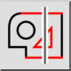
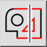
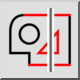
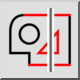

(De-)selecionar Entidades Intersectadas
Barra de ferramentas / Ícone:
 

Menu: Selecione > (De-)selecionar Entidades Intersectadas
Atalho: T, X
Comandos: selectintersected | tx | ux
Esta é uma tradução automática.
Barra de ferramentas / Ícone:
 

Menu: Selecione > (De-)selecionar Entidades Intersectadas
Atalho: T, X
Comandos: selectintersected | tx | ux
Selecciona ou desmarca todas as entidades que são intersectadas por uma linha.